# DA 6833 02T
# Summer 2024
# School of Data Science
# University of Texas at San Antonio
# Zane Chumley
# Banner ID: @01318598
# UTSAid: wgs999cdcdata-exercise
Assignment 5: Processing Data
Startup
Introduction
Install Packages as Needed
# install.packages("simstudy")Load Libraries as Needed
# library(readxl) #for loading Excel files
# library(dplyr) #for data processing/cleaning
# library(tidyr) #for data processing/cleaning
# library(tidyverse)
# library(skimr) #for nice visualization of data
# library(here) #to set paths
# library(dslabs) #for data used in this assignment
# library(tibble)
# library(simstudy)
library(sqldf)Warning: package 'sqldf' was built under R version 4.3.3Loading required package: gsubfnWarning: package 'gsubfn' was built under R version 4.3.3Loading required package: protoWarning: package 'proto' was built under R version 4.3.3Loading required package: RSQLiteWarning: package 'RSQLite' was built under R version 4.3.3Define Global Variables
# Define path to .csv file containing data
ZC.filepath <- "Nutrition__Physical_Activity__and_Obesity_-_Behavioral_Risk_Factor_Surveillance_System_20240703.csv"
# The master dataset may undergo dimensional changes throughout this exercise. The changing dimensions will be tracked over time. Variables to track these changing dimensions will be created.
ZC.dimindex <- 0
ZC.datarows <- list()
ZC.datacols <- list()
# There may be columns with data arbitrarily judged to have worthless data. Variables will be created to store these column names for subsequent examination.
ZC.columnindex <- 0
ZC.examinedcolumns <- list()
# There may be lookup tables created during this exercise to simplify the master dataset. When created, the column containing the lookup table and the name of the lookup table will be stored.
ZC.lookupindex <- 0
ZC.lookupcolumn <- list()
ZC.lookuptable <- list()Part 1
Part 1-a: Finding the Data
Previously, you did a quick exploration of a dataset that came with an R package (gapminder data inside dslabs package). A lot of datasets can be found inside R packages. For instance, this page lists what is likely only a small fractionLinks to an external site.. The good and the bad about datasets that come with R packages is that they are often fairly clean/tidy. That’s unfortunately not how most “real world” datasets look like. Getting dirty and messy datasets and wrangling them into a form that is suitable for statistical analysis is part of most workflows and often takes a lot of time. We’ll start practicing this here by getting data that might or might not be very clean.
Go to the CDC’s data website at https://data.cdc.gov/Links to an external site.. Browse through the site and identify a dataset of interest.
Which dataset you choose is up to you. I suggest you pick a dataset that has at least 100 observations with 5 different variables, and a mix of continuous and categorical ones. Often, 5 variables means 5 columns. That would be the case in properly formatted data. However, some of the data provided by the CDC is rather poorly formatted. For instance CDC’s dataset on traumatic brain injuryLinks to an external site. has the same variable (age) in separate columns, and it is also discretized. As we’ll discuss, these are two really bad things you can do to your data, so I recommend staying away from such datasets. There are plenty on that website, so I’m sure you’ll find one that is suitable and interesting to you.
Part 1-b: Getting the Data
To get the dataset you selected, it is easiest if you download the file to your computer and place it inside your portfolio repository. Note that in general, you should make each data analysis (or other) project its own GitHub repository, and always use a structure like the one provided in the Data Analysis Template (or something similar). However, for this small exercise and for logistic reasons, you’ll use your portfolio/website repository, and just a single folder. Make a new folder called cdcdata-exercise inside your portfolio repository. Place the data into that folder.
Remember that GitHub doesn’t like large files. So if you pick a large data file (>50MB), first place it somewhere outside your repository, then reduce it by e.g., writing some R code that selects only a portion of the data. Once it’s small enough, you can place it into the GitHub repository.
While you should be able to find data for direct download from the CDC website, sometimes you need to write a bit of code to pull data from a source. This is usually done through an API. R has packages that make this relatively easy. If you ever encounter that situation, search online for instructions. Google/Stackoverflow are your friends to figure out what commands you need to write).
Part 1-c: Exploring the Data
Now, write code that explores the data. Add a new Quarto document called cdcdata-exercise.qmd to the folder you just created.
Start by providing a brief description of the data, where you got it, what it contains. Also add a link to the source.
This assignment uses a dataset from the United States Center for Disease Control (CDC) titled, “Nutrition, Physical Activity, and Obesity - Behavioral Risk Factor Surveillance System.” The dataset and column definition can be found here.
The CDC describes the dataset as follows:
This dataset includes data on adult’s diet, physical activity, and weight status from Behavioral Risk Factor Surveillance System. This data is used for DNPAO’s Data, Trends, and Maps database, which provides national and state specific data on obesity, nutrition, physical activity, and breastfeeding.
Note
The DNPAO is the CDC’s Division of Nutrition, Physical Activity, and Obesity.
Then write code that reads/loads the data. As needed, process the data (e.g., if there are weird symbols in the data, or missing values coded as 999 or anything of that sort, write code to fix it.) If your dataset has a lot of variables, pick a few of them (at least 5).
The dataset is described by the CDC as 93.2k rows with 33 columns each. For this assignment, the entire dataset will be loaded.
# Track time it takes to load
ZC.START_TIMESTAMP <- proc.time()
# load the data into a dataframe
ZC.data <- read.csv(ZC.filepath)
ZC.loadtime <- proc.time() - ZC.START_TIMESTAMP
# Report the load time
ZC.printline <- paste("The data took"
, ZC.loadtime[3]
, "seconds to load."
, sep=" "
)
ZC.printline[1] "The data took 0.76 seconds to load."There were no issues encountered while loading the data.
# Report master dataset dimensions
# Increase dimension index
ZC.dimindex <- ZC.dimindex+1
ZC.TheseDims <- dim(ZC.data)
ZC.datarows[ZC.dimindex] <- ZC.TheseDims[1]
ZC.datacols[ZC.dimindex] <- ZC.TheseDims[2]
ZC.printline <- paste("The master dataset is currently"
, ZC.datarows[ZC.dimindex]
, "rows by"
, ZC.datacols[ZC.dimindex]
, "columns."
, sep=" ")
ZC.printline[1] "The master dataset is currently 93249 rows by 33 columns."To get an overview of what we have just loaded, a table with summary information about each column is constructed.
# Setup control variables and lists
ZC.index <- 0
ZC.colname <- list()
ZC.coltype <- list()
ZC.NAvals <- list()
ZC.unique <- list()
ZC.example <- list()
# Loop through the columns to populate the lists
for (ZC.ThisColumn in colnames(ZC.data))
{
#Increment the index for the lists
ZC.index <- ZC.index+1
# Assign the column name
ZC.colname[ZC.index] <- ZC.ThisColumn
# Assign the column type
ZC.coltype[ZC.index] <- typeof(ZC.data[[ZC.ThisColumn]])
# Count the number of NAs in the column
ZC.NAvals[ZC.index] <- sum(is.na(ZC.data[[ZC.ThisColumn]]))
# Count the numner of unique values in the column
ZC.TheseValues <- table(ZC.data[[ZC.ThisColumn]])
ZC.unique[ZC.index] <- length(ZC.TheseValues)
# Find a suitable example value
# Prepare to loop through all the values to find an acceptable example
for (ZC.ThisRow in 1:nrow(ZC.data))
{
# Start this FOR loop but prepare to break out of it
ZC.BreakFlag = 0
# As soon as an acceptable value is found, set the break flag to 1
# Retrieve the value in ThisRow
ZC.ThisExp <- ZC.data[[ZC.ThisColumn]][ZC.ThisRow]
# Continue with this example only if it is not NA
if (!is.na(ZC.ThisExp))
{
# Subsequent processing depends on data type of current example
# Is the current example a character string?
if (typeof(ZC.ThisExp) == "character")
{
# Trim any leading and trailing spaces from the current example
# If there is nothing but spaces, only an empty string will survive
ZC.ThisExp <- trimws(ZC.ThisExp)
# Continue with this example only if it is not empty
if (nchar(ZC.ThisExp)>0)
{
# We have an acceptable example
ZC.BreakFlag <- 1
# Let's cut it short if the example is too long
if (nchar(ZC.ThisExp)>8)
{
ZC.ThisExp <- paste(substr(ZC.ThisExp, 1, 5), "...", sep="")
}
}
} else if (typeof(ZC.ThisExp) == "integer" | typeof(ZC.ThisExp) == "double")
{
# We would prefer a nonzero value, and we will loop through all the values if necessary to find one
if (!ZC.ThisExp==0) ZC.BreakFlag <- 1
} else
{ # The value could be boolean, complex, or something else
# We will take it
ZC.BreakFlag <- 1
}
}
# If we have an acceptable value, we can stop looping through the rows
if (ZC.BreakFlag == 1) break
}
ZC.example[ZC.index] <- ZC.ThisExp
}
# Bind the lists together in a single object
ZC.datasum01 <- cbind(ZC.colname, ZC.coltype, ZC.NAvals, ZC.unique, ZC.example)
# Apply more friendly column names
colnames(ZC.datasum01) <- c("Column"
, "Data Type"
, "NA Values"
, "Uniques"
, "Example"
)
ZC.datasum01 Column Data Type NA Values Uniques Example
[1,] "YearStart" "integer" 0 12 2020
[2,] "YearEnd" "integer" 0 12 2020
[3,] "LocationAbbr" "character" 0 55 "US"
[4,] "LocationDesc" "character" 0 55 "National"
[5,] "Datasource" "character" 0 2 "Behav..."
[6,] "Class" "character" 0 3 "Physi..."
[7,] "Topic" "character" 0 3 "Physi..."
[8,] "Question" "character" 0 9 "Perce..."
[9,] "Data_Value_Unit" "logical" 93249 0 NA
[10,] "Data_Value_Type" "character" 0 1 "Value"
[11,] "Data_Value" "double" 9235 695 30.6
[12,] "Data_Value_Alt" "double" 9235 695 30.6
[13,] "Data_Value_Footnote_Symbol" "character" 0 2 "~"
[14,] "Data_Value_Footnote" "character" 0 2 "Data ..."
[15,] "Low_Confidence_Limit" "double" 9235 666 29.4
[16,] "High_Confidence_Limit" "double" 9235 761 31.8
[17,] "Sample_Size" "integer" 9235 9761 31255
[18,] "Total" "character" 0 2 "Total"
[19,] "Age.years." "character" 0 7 "25 - 34"
[20,] "Education" "character" 0 5 "High ..."
[21,] "Gender" "character" 0 3 "Female"
[22,] "Income" "character" 0 8 "$50,0..."
[23,] "Race.Ethnicity" "character" 0 9 "Hispanic"
[24,] "GeoLocation" "character" 0 106 "(13.4..."
[25,] "ClassID" "character" 0 3 "PA"
[26,] "TopicID" "character" 0 3 "PA1"
[27,] "QuestionID" "character" 0 9 "Q047"
[28,] "DataValueTypeID" "character" 0 1 "VALUE"
[29,] "LocationID" "integer" 0 55 59
[30,] "StratificationCategory1" "character" 0 7 "Race/..."
[31,] "Stratification1" "character" 0 29 "Hispanic"
[32,] "StratificationCategoryId1" "character" 0 7 "RACE"
[33,] "StratificationID1" "character" 0 29 "RACEHIS" The above output stipulates that the values in Data_Value_Unit are worthless, confirmed by two (2) distinct findings:
- all 93,239 values are “NA”
- zero (0) unique values
Additionally, there is only one unique value in the following columns:
- Data_Value_Type
- DataValueTypeID
Therefore, all three (3) of these columns will be dropped from the dataframe.
ZC.data <- subset(ZC.data, select = -c(Data_Value_Unit, Data_Value_Type, DataValueTypeID))
# Report master dataset dimensions
# Increase dimension index
ZC.dimindex <- ZC.dimindex+1
ZC.TheseDims <- dim(ZC.data)
ZC.datarows[ZC.dimindex] <- ZC.TheseDims[1]
ZC.datacols[ZC.dimindex] <- ZC.TheseDims[2]
ZC.printline <- paste("The master dataset is currently"
, ZC.datarows[ZC.dimindex]
, "rows by"
, ZC.datacols[ZC.dimindex]
, "columns."
, sep=" ")
ZC.printline[1] "The master dataset is currently 93249 rows by 30 columns."There are also some column with unique counts so low they appear to offer little or no value. They will be dropped if they are so judged to be unvalued. The columns to be examined are:
- Datasource
- Data_Value_Footnote_Symbol
- Data_Value_Footnote
- Total
For each of these columns, the distinct values will be displayed for evaluation.
# create list of columns to be examined
ZC.examinedcolumns[1] <- "Datasource"
ZC.examinedcolumns[2] <- "Data_Value_Footnote_Symbol"
ZC.examinedcolumns[3] <- "Data_Value_Footnote"
ZC.examinedcolumns[4] <- "Total"
# loop through the columns to be examined, building and displaying a temporary table of the unique values and their counts.
for (ZC.ExamineThis in ZC.examinedcolumns)
{
# create section separator
ZC.printline <- "********************************"
print (ZC.printline)
# build SQL statement syntax
ZC.RunThis <- paste("select "
, ZC.ExamineThis
,", count(*) as Occurs from 'ZC.data' group by "
, ZC.ExamineThis
, sep = "")
# display SQL statement for posterity
ZC.printline <- paste("Running: "
, ZC.RunThis
, sep = "")
print(ZC.printline)
# load results into temporary table
ZC.ThisTable <- sqldf(ZC.RunThis)
# display contents of temporary table
ZC.printline <- paste("Unique Values of "
, ZC.ExamineThis
, ":"
, sep=""
)
print(ZC.printline)
# display results of temporary table
print(ZC.ThisTable)
}[1] "********************************"
[1] "Running: select Datasource, count(*) as Occurs from 'ZC.data' group by Datasource"
[1] "Unique Values of Datasource:"
Datasource Occurs
1 BRFSS 4620
2 Behavioral Risk Factor Surveillance System 88629
[1] "********************************"
[1] "Running: select Data_Value_Footnote_Symbol, count(*) as Occurs from 'ZC.data' group by Data_Value_Footnote_Symbol"
[1] "Unique Values of Data_Value_Footnote_Symbol:"
Data_Value_Footnote_Symbol Occurs
1 84014
2 ~ 9235
[1] "********************************"
[1] "Running: select Data_Value_Footnote, count(*) as Occurs from 'ZC.data' group by Data_Value_Footnote"
[1] "Unique Values of Data_Value_Footnote:"
Data_Value_Footnote Occurs
1 84014
2 Data not available because sample size is insufficient. 9235
[1] "********************************"
[1] "Running: select Total, count(*) as Occurs from 'ZC.data' group by Total"
[1] "Unique Values of Total:"
Total Occurs
1 89919
2 Total 3330Based on the above results, Datasource will be dropped immediately, as the unique values seem synonyms for each other, so there is really only one value in the column. The other three (3) columns require additional consideration.
ZC.data <- subset(ZC.data, select = -c(Datasource))
# Report master dataset dimensions
# Increase dimension index
ZC.dimindex <- ZC.dimindex+1
ZC.TheseDims <- dim(ZC.data)
ZC.datarows[ZC.dimindex] <- ZC.TheseDims[1]
ZC.datacols[ZC.dimindex] <- ZC.TheseDims[2]
ZC.printline <- paste("The master dataset is currently"
, ZC.datarows[ZC.dimindex]
, "rows by"
, ZC.datacols[ZC.dimindex]
, "columns."
, sep=" ")
ZC.printline[1] "The master dataset is currently 93249 rows by 29 columns."The Total column unique values don’t seem to tell much. The CDC describes the data in this column as:
Total/Overall breakout category
Given the vagueness of the description and the unique values, the Total column will also be dropped.
ZC.data <- subset(ZC.data, select = -c(Total))
# Report master dataset dimensions
# Increase dimension index
ZC.dimindex <- ZC.dimindex+1
ZC.TheseDims <- dim(ZC.data)
ZC.datarows[ZC.dimindex] <- ZC.TheseDims[1]
ZC.datacols[ZC.dimindex] <- ZC.TheseDims[2]
ZC.printline <- paste("The master dataset is currently"
, ZC.datarows[ZC.dimindex]
, "rows by"
, ZC.datacols[ZC.dimindex]
, "columns."
, sep=" ")
ZC.printline[1] "The master dataset is currently 93249 rows by 28 columns."The GeoLocation column appears to have highly-coded data. The CDC describes this column as:
Latitude & Longitude to be provided for formatting GeoLocation or Geocode in the format (latitude, longitude)
Therefore, this column will also be dropped.
ZC.data <- subset(ZC.data, select = -c(GeoLocation))
# Report master dataset dimensions
# Increase dimension index
ZC.dimindex <- ZC.dimindex+1
ZC.TheseDims <- dim(ZC.data)
ZC.datarows[ZC.dimindex] <- ZC.TheseDims[1]
ZC.datacols[ZC.dimindex] <- ZC.TheseDims[2]
ZC.printline <- paste("The master dataset is currently"
, ZC.datarows[ZC.dimindex]
, "rows by"
, ZC.datacols[ZC.dimindex]
, "columns."
, sep=" ")
ZC.printline[1] "The master dataset is currently 93249 rows by 27 columns."The count of the only nonblank value in both the Data_Value_Footnote_Symbol and Data_Value_Footnote have been seen before: coincidence or not, there are the exact name number of NA values in the Data_Value and Data_Value_Alt columns. If it turns out there is a meaningful value in Data_Value_Footnote_Symbol and Data_Value_Footnote for each NA in Data_Value and Data_Value_Alt, then the Data_Value_Footnote_Symbol and Data_Value_Footnote columns can be considered duplicative information for NA values in the Data_Value and Data_Value_Alt columns.
To examine, we will build lists of the rows where the following conditions occur, and then compare them to see if they are equal:
- Where Data_Value_Footnote_Symbol is not blank
- Where Data_Value_Footnote is not blank
- Where Data_Value is NA
- Where Data_Value_Alt is NA
# create lists to store row numbers where specified conditions occur
# store rows where Data_Value_Footnote_Symbol is not blank
ZC.DVFS <- list()
# store rows where Data_Value_Footnote is not blank
ZC.DVF <- list()
# store rows where Data_Value is NA
ZC.DV <- list()
# store rows where Data_Value_Alt is NA
ZC.DVA <- list()
# create index variable for each list
ZC.DVFSIndex <- 0
ZC.DVFIndex <- 0
ZC.DVIndex <- 0
ZC.DVAIndex <- 0
# loop through the rows in the master dataset and store indices where conditions are met
ZC.RowRange <- 1:nrow(ZC.data)
for (ZC.CheckRow in ZC.RowRange)
{
# pull Data_Value_Footnote_Symbol value in current row
ZC.ThisValue <- ZC.data$Data_Value_Footnote_Symbol[ZC.CheckRow]
if (!(is.null(ZC.ThisValue)))
{
# Value is not NULL
# But is it empty or blank?
ZC.ThisValue <- trimws(ZC.ThisValue)
if (nchar(ZC.ThisValue)>0)
{
# value is not blank, so store the row number
ZC.DVFSIndex <- ZC.DVFSIndex+1
ZC.DVFS[ZC.DVFSIndex] <- ZC.CheckRow
}
}
# pull Data_Value_Footnote value in current row
ZC.ThisValue <- ZC.data$Data_Value_Footnote[ZC.CheckRow]
if (!(is.null(ZC.ThisValue)))
{
# Value is not NULL
# But is it empty or blank?
ZC.ThisValue <- trimws(ZC.ThisValue)
if (nchar(ZC.ThisValue)>0)
{
# value is not blank, so store the row number
ZC.DVFIndex <- ZC.DVFIndex+1
ZC.DVF[ZC.DVFIndex] <- ZC.CheckRow
}
}
# is Data_Value an NA value?
if (is.na(ZC.data$Data_Value[ZC.CheckRow]))
{
# value is NA, so store the row number
ZC.DVIndex <- ZC.DVIndex+1
ZC.DV[ZC.DVIndex] <- ZC.CheckRow
}
# is Data_Value_Alt an NA value?
if (is.na(ZC.data$Data_Value_Alt[ZC.CheckRow]))
{
# value is NA, so store the row number
ZC.DVAIndex <- ZC.DVAIndex+1
ZC.DVA[ZC.DVAIndex] <- ZC.CheckRow
}
}Now that the lists of the row numbers where the conditions occur have been built, they need to be compared. They only need to be compared if they are all the same length, so that will be checked first.
# Compare the list of row numbers where conditions were met
# Are all the lists of the same length? No need to compare if not.
# Create an indicator flag to indicate if the row numbers match.
# They can't match if the count of row numbers does not match, so assume it is FALSE
ZC.CompEquals <- FALSE
if (ZC.DVFSIndex==ZC.DVFIndex&ZC.DVFIndex==ZC.DVIndex&ZC.DVIndex==ZC.DVAIndex)
{
# The lists are the same length. A loop will be used to compare value by value.
# No need to continue the loop as soon as a difference if found
# Set the indicator to TRUE; change to FALSE if an unequal row number is found
ZC.CompEquals <- TRUE
# The row numbers in the list are actually embedded inside lists of one (1) item.
ZC.CompRange <- 1:ZC.DVIndex
for (ZC.CompRow in ZC.CompRange)
{
# The row numbers in the list are actually embedded inside lists of one (1) item.
# We'll break each value out of it's list before we compare.
ZC.ThisDVFS <- unlist(ZC.DVFS[ZC.CompRow])
ZC.ThisDVF <- unlist(ZC.DVF[ZC.CompRow])
ZC.ThisDV <- unlist(ZC.DV[ZC.CompRow])
ZC.ThisDVA <- unlist(ZC.DVA[ZC.CompRow])
if(!(ZC.ThisDVFS==ZC.ThisDVF&ZC.ThisDVF==ZC.ThisDV&ZC.ThisDV==ZC.ThisDVA))
{
# We found a row number that did not match. Set indicator value to FALSE and stop
ZC.CompEquals <- FALSE
break
}
}
}
ZC.ThisDVFS # TDL[1] 93241typeof(ZC.ThisDVFS) #TDL[1] "integer"ZC.CompRow # TDL[1] 9235typeof(ZC.CompRow) #TDL[1] "integer"ZC.DVFS[ZC.CompRow] # TDL[[1]]
[1] 93241typeof(ZC.DVFS[ZC.CompRow]) # TDL[1] "list"ZC.DVF[ZC.CompRow] #TDL[[1]]
[1] 93241typeof(ZC.DVF[ZC.CompRow]) # TDL[1] "list"# Did the indicator flag survive every row number comparison?
if (ZC.CompEquals)
{
print("Row numbers where conditions are met match.")
} else
{
print("Row numbers where conditions are met do not match.")
}[1] "Row numbers where conditions are met match."The lists of row numbers where the conditions were met match exactly. Therefore, the data in columns Data_Value_Footnote_Symbol and Data_Value_Footnote can be considered redundant for cases when the values in Data_Value and Data_Value_Alt are NA. Having already established that the data in columns Data_Value_Footnote_Symbol and Data_Value_Footnote is blank when the values in Data_Value and Data_Value_Alt are not NA, we can remove the columns with blank/redundant data.
ZC.data <- subset(ZC.data, select = -c(Data_Value_Footnote_Symbol, Data_Value_Footnote))
# Report master dataset dimensions
# Increase dimension index
ZC.dimindex <- ZC.dimindex+1
ZC.TheseDims <- dim(ZC.data)
ZC.datarows[ZC.dimindex] <- ZC.TheseDims[1]
ZC.datacols[ZC.dimindex] <- ZC.TheseDims[2]
ZC.printline <- paste("The master dataset is currently"
, ZC.datarows[ZC.dimindex]
, "rows by"
, ZC.datacols[ZC.dimindex]
, "columns."
, sep=" ")
ZC.printline[1] "The master dataset is currently 93249 rows by 25 columns."Next, the count of unique values, coupled with the column names, suggests a one-to-one relationship between the data in one column and the data in another. In proven true, we can reduce repetitiveness by archiving off the duplicated data into a separate lookup table. Column combinations to consider are:
- LocationID, a potential lookup for both LocationAbbr and LocationDesc
- StratificationCategoryId1, a potential lookup for StratificationCategory1
- StratificationID1, a potential lookup for Stratification1
The validity of an index/lookup relationship between the above potentials will be explored, beginning with LocationID.
A SQL statement will be utilized to count the number of times each combination of the LocationID, LocationAbbr, and LocationDesc occurs in the data. Since there are 55 unique values in each of these columns, if there are a total of 55 combinations, then a one-to-one(-to-one) correlation is established.
sqldf("select LocationID, LocationAbbr, LocationDesc, count(*) as Occurs from 'ZC.data' group by LocationID, LocationAbbr, LocationDesc") LocationID LocationAbbr LocationDesc Occurs
1 1 AL Alabama 1736
2 2 AK Alaska 1736
3 4 AZ Arizona 1736
4 5 AR Arkansas 1736
5 6 CA California 1736
6 8 CO Colorado 1736
7 9 CT Connecticut 1736
8 10 DE Delaware 1736
9 11 DC District of Columbia 1736
10 12 FL Florida 1736
11 13 GA Georgia 1736
12 15 HI Hawaii 1736
13 16 ID Idaho 1736
14 17 IL Illinois 1736
15 18 IN Indiana 1736
16 19 IA Iowa 1736
17 20 KS Kansas 1736
18 21 KY Kentucky 1736
19 22 LA Louisiana 1736
20 23 ME Maine 1736
21 24 MD Maryland 1736
22 25 MA Massachusetts 1736
23 26 MI Michigan 1736
24 27 MN Minnesota 1736
25 28 MS Mississippi 1736
26 29 MO Missouri 1736
27 30 MT Montana 1736
28 31 NE Nebraska 1736
29 32 NV Nevada 1736
30 33 NH New Hampshire 1736
31 34 NJ New Jersey 1493
32 35 NM New Mexico 1736
33 36 NY New York 1736
34 37 NC North Carolina 1736
35 38 ND North Dakota 1736
36 39 OH Ohio 1736
37 40 OK Oklahoma 1736
38 41 OR Oregon 1736
39 42 PA Pennsylvania 1736
40 44 RI Rhode Island 1736
41 45 SC South Carolina 1736
42 46 SD South Dakota 1736
43 47 TN Tennessee 1736
44 48 TX Texas 1736
45 49 UT Utah 1736
46 50 VT Vermont 1736
47 51 VA Virginia 1736
48 53 WA Washington 1736
49 54 WV West Virginia 1736
50 55 WI Wisconsin 1736
51 56 WY Wyoming 1736
52 59 US National 1736
53 66 GU Guam 1260
54 72 PR Puerto Rico 1316
55 78 VI Virgin Islands 644There are only 55 total unique combinations for these three (3) variables, so a lookup table for LocationAbbr and another for LocationDesc will be created, both with LocationID as the lookup value. The lookup value and the first lookup table will be stored as a relationship. Afterwards, the columns containing the lookup values will be dropped.
# Creating and displaying top of lookup tables
ZC.lookupLocationAbbr <- sqldf("select distinct LocationID, LocationAbbr from 'ZC.data' order by LocationID")
head(ZC.lookupLocationAbbr) LocationID LocationAbbr
1 1 AL
2 2 AK
3 4 AZ
4 5 AR
5 6 CA
6 8 COZC.lookupLocationDesc <- sqldf("select distinct LocationID, LocationDesc from 'ZC.data' order by LocationID")
head(ZC.lookupLocationDesc) LocationID LocationDesc
1 1 Alabama
2 2 Alaska
3 4 Arizona
4 5 Arkansas
5 6 California
6 8 Colorado# Storing lookup columns and lookup table names
ZC.lookupindex <- ZC.lookupindex+1
ZC.lookupcolumn[ZC.lookupindex] <- "LocationID"
ZC.lookuptable[ZC.lookupindex] <- "LocationAbbr"
ZC.data <- subset(ZC.data, select = -c(LocationAbbr, LocationDesc))
# Report master dataset dimensions
# Increase dimension index
ZC.dimindex <- ZC.dimindex+1
ZC.TheseDims <- dim(ZC.data)
ZC.datarows[ZC.dimindex] <- ZC.TheseDims[1]
ZC.datacols[ZC.dimindex] <- ZC.TheseDims[2]
ZC.printline <- paste("The master dataset is currently"
, ZC.datarows[ZC.dimindex]
, "rows by"
, ZC.datacols[ZC.dimindex]
, "columns."
, sep=" ")
ZC.printline[1] "The master dataset is currently 93249 rows by 23 columns."A SQL statement will be utilized to count the number of times each combination of the StratificationCategoryId1 and StratificationCategory1 occurs in the data. Since there are seven (7) unique values in each of these columns, if there are a total of seven (7) combinations, then a one-to-one correlation is established.
sqldf("select StratificationCategoryId1, StratificationCategory1, count(*) as Occurs from 'ZC.data' group by StratificationCategoryId1, StratificationCategory1") StratificationCategoryId1 StratificationCategory1 Occurs
1 9
2 AGEYR Age (years) 19980
3 EDU Education 13320
4 GEN Gender 6660
5 INC Income 23310
6 OVR Total 3330
7 RACE Race/Ethnicity 26640There are only seven (7) total unique combinations for these two (2) variables, so a lookup table for StratificationCategory1 will be created with StratificationCategoryId1 as the lookup value. The lookup value and the lookup table will be stored as a relationship. Afterwards, the columns containing the lookup values will be dropped.
# Creating and displaying top of lookup tables
ZC.StratificationCategory1 <- sqldf("select distinct StratificationCategoryId1, StratificationCategory1 from 'ZC.data' order by StratificationCategoryId1")
head(ZC.StratificationCategory1) StratificationCategoryId1 StratificationCategory1
1
2 AGEYR Age (years)
3 EDU Education
4 GEN Gender
5 INC Income
6 OVR Total# Storing lookup columns and lookup table names
ZC.lookupindex <- ZC.lookupindex+1
ZC.lookupcolumn[ZC.lookupindex] <- "StratificationCategoryId1"
ZC.lookuptable[ZC.lookupindex] <- "StratificationCategory1"
ZC.data <- subset(ZC.data, select = -c(StratificationCategory1))
# Report master dataset dimensions
# Increase dimension index
ZC.dimindex <- ZC.dimindex+1
ZC.TheseDims <- dim(ZC.data)
ZC.datarows[ZC.dimindex] <- ZC.TheseDims[1]
ZC.datacols[ZC.dimindex] <- ZC.TheseDims[2]
ZC.printline <- paste("The master dataset is currently"
, ZC.datarows[ZC.dimindex]
, "rows by"
, ZC.datacols[ZC.dimindex]
, "columns."
, sep=" ")
ZC.printline[1] "The master dataset is currently 93249 rows by 22 columns."A SQL statement will be utilized to count the number of times each combination of the StratificationID1 and Stratification1 occurs in the data. Since there are 29 unique values in each of these columns, if there are a total of 29 combinations, then a one-to-one correlation is established.
sqldf("select StratificationID1, Stratification1, count(*) as Occurs from 'ZC.data' group by StratificationID1, Stratification1") StratificationID1 Stratification1 Occurs
1 9
2 AGEYR1824 18 - 24 3330
3 AGEYR2534 25 - 34 3330
4 AGEYR3544 35 - 44 3330
5 AGEYR4554 45 - 54 3330
6 AGEYR5564 55 - 64 3330
7 AGEYR65PLUS 65 or older 3330
8 EDUCOGRAD College graduate 3330
9 EDUCOTEC Some college or technical school 3330
10 EDUHS Less than high school 3330
11 EDUHSGRAD High school graduate 3330
12 FEMALE Female 3330
13 INC1525 $15,000 - $24,999 3330
14 INC2535 $25,000 - $34,999 3330
15 INC3550 $35,000 - $49,999 3330
16 INC5075 $50,000 - $74,999 3330
17 INC75PLUS $75,000 or greater 3330
18 INCLESS15 Less than $15,000 3330
19 INCNR Data not reported 3330
20 MALE Male 3330
21 OVERALL Total 3330
22 RACE2PLUS 2 or more races 3330
23 RACEASN Asian 3330
24 RACEBLK Non-Hispanic Black 3330
25 RACEHIS Hispanic 3330
26 RACEHPI Hawaiian/Pacific Islander 3330
27 RACENAA American Indian/Alaska Native 3330
28 RACEOTH Other 3330
29 RACEWHT Non-Hispanic White 3330There are only 29 total unique combinations for these two (2) variables, so a lookup table for Stratification1 will be created with StratificationID1 as the lookup value. The lookup value and the lookup table will be stored as a relationship. Afterwards, the columns containing the lookup values will be dropped.
# Creating and displaying top of lookup tables
ZC.Stratification1 <- sqldf("select distinct StratificationID1, Stratification1 from 'ZC.data' order by StratificationID1")
head(ZC.Stratification1) StratificationID1 Stratification1
1
2 AGEYR1824 18 - 24
3 AGEYR2534 25 - 34
4 AGEYR3544 35 - 44
5 AGEYR4554 45 - 54
6 AGEYR5564 55 - 64# Storing lookup columns and lookup table names
ZC.lookupindex <- ZC.lookupindex+1
ZC.lookupcolumn[ZC.lookupindex] <- "StratificationID1"
ZC.lookuptable[ZC.lookupindex] <- "Stratification1"
ZC.data <- subset(ZC.data, select = -c(Stratification1))
# Report master dataset dimensions
# Increase dimension index
ZC.dimindex <- ZC.dimindex+1
ZC.TheseDims <- dim(ZC.data)
ZC.datarows[ZC.dimindex] <- ZC.TheseDims[1]
ZC.datacols[ZC.dimindex] <- ZC.TheseDims[2]
ZC.printline <- paste("The master dataset is currently"
, ZC.datarows[ZC.dimindex]
, "rows by"
, ZC.datacols[ZC.dimindex]
, "columns."
, sep=" ")
ZC.printline[1] "The master dataset is currently 93249 rows by 21 columns."Similarly, it’s possible YearStart always equals YearEnd, Class always equals Topic, and Data_Value always equals Data_Value_Alt. Code will be executed to see if these possible pairs always duplicate a value in the other; if so, the duplicate column will be dropped.
Since there are NA values in both the Data_Value and Data_Value_Alt, and R code will halt if it tries to compare an NA with anything (even another NA value), this comparison will be conditional. For the purposes of this exercise:
- if both values are NA, the values are considered equal (but a comparison cannot be attempted by R).
- if one value is NA but the other is not, the values are considered not equal.
- if neither value is NA, a comparison will be performed to determine if the values are equal or not.
# Set up variables to count differences
ZC.YearDeltas <- 0
ZC.ClassDeltas <- 0
ZC.DataDeltas <- 0
for (ZC.ThisRow in 1:nrow(ZC.data))
{
# Count if YearStart and YearEnd are different values
if (!(ZC.data$YearStart[ZC.ThisRow]==ZC.data$YearEnd[ZC.ThisRow]))
{
# Brackets not necessary; just respecting page margins
ZC.YearDeltas <- ZC.YearDeltas+1
}
# Count if Class and Topic are different values
if(!(ZC.data$Class[ZC.ThisRow]==ZC.data$Topic[ZC.ThisRow]))
{
# Brackets not necessary; just respecting page margins
ZC.ClassDeltas <- ZC.ClassDeltas+1
}
# There could be NA values for either Data_Value and/or Data_Value_Alt
# If both are NA, there is no difference
# If only one is NA, there is a difference
# Only compare if neither are NA
if (is.na(ZC.data$Data_Value[ZC.ThisRow])==is.na(ZC.data$Data_Value_Alt[ZC.ThisRow]))
{
# Either both are NA or neither or NA
# Comparison is not necessary (or valid!) if both are NA
if (!(is.na(ZC.data$Data_Value[ZC.ThisRow])))
{
# Neither are NA - compare values
if (!(ZC.data$Data_Value[ZC.ThisRow]==ZC.data$Data_Value_Alt[ZC.ThisRow]))
{
# Values are not equal
ZC.DataDeltas <- ZC.DataDeltas+1
}
}
}
else
{
# One value is NA but not the other, so they are automatically not equal
ZC.DataDeltas <- ZC.DataDeltas+1
}
}
# Report on deltas
ZC.printline <- paste("There were"
, ZC.YearDeltas
, "row(s) with different values in YearStart and YearEnd."
, sep = " ")
ZC.printline[1] "There were 0 row(s) with different values in YearStart and YearEnd."ZC.printline <- paste("There were"
, ZC.ClassDeltas
, "row(s) with different values in Class and Topic."
, sep = " ")
ZC.printline[1] "There were 57015 row(s) with different values in Class and Topic."ZC.printline <- paste("There were"
, ZC.DataDeltas
, "row(s) with different values in Data_Value and Data_Value_Alt."
, sep = " ")
ZC.printline[1] "There were 0 row(s) with different values in Data_Value and Data_Value_Alt."# Drop YearEnd if it always equals YearStart
if (ZC.YearDeltas==0)
{
print("Dropping column YearEnd")
ZC.data <- subset(ZC.data, select = -c(YearEnd))
}[1] "Dropping column YearEnd"# Drop Topic if it always equals Class
if (ZC.ClassDeltas==0)
{
print("Dropping column Topic")
ZC.data <- subset(ZC.data, select = -c(Topic))
}
# Drop Data_Value_Alt if it always equals Data_Value
if (ZC.DataDeltas==0)
{
print("Dropping column Data_Value_Alt")
ZC.data <- subset(ZC.data, select = -c(Data_Value_Alt))
}[1] "Dropping column Data_Value_Alt"# Report master dataset dimensions
# Increase dimension index
ZC.dimindex <- ZC.dimindex+1
ZC.TheseDims <- dim(ZC.data)
ZC.datarows[ZC.dimindex] <- ZC.TheseDims[1]
ZC.datacols[ZC.dimindex] <- ZC.TheseDims[2]
ZC.printline <- paste("The master dataset is currently"
, ZC.datarows[ZC.dimindex]
, "rows by"
, ZC.datacols[ZC.dimindex]
, "columns."
, sep=" ")
ZC.printline[1] "The master dataset is currently 93249 rows by 19 columns."Finally, some column names do not play well with SQL (when they contain unallowed characters), which will be used later to build the data for the charts. So, there will be a few manual manipulations of some column names:
- Age.years. will become AgeYears
- Race.Ethnicity will become RaceEthnic
# change column names to be more SQL-friendly
print(typeof(ZC.data)) # TDL[1] "list"names(ZC.data)[names(ZC.data) == 'Age.years.'] <- 'AgeYears'
names(ZC.data)[names(ZC.data) == 'Race.Ethnicity'] <- 'RaceEthnic'The summary table will be rebuilt before continuing. This time, a new column, LU (for lookup) will be created. If a lookup table has been created for the master dataset column, LU will be set to one (1); otherwise, it will be set to zero (0).
# Setup control variables and lists
ZC.index <- 0
ZC.colname <- list()
ZC.coltype <- list()
ZC.NAvals <- list()
ZC.unique <- list()
ZC.lookups <- list()
ZC.example <- list()
# Loop through the columns to populate the lists
for (ZC.ThisColumn in colnames(ZC.data))
{
#Increment the index for the lists
ZC.index <- ZC.index+1
# Assign the column name
ZC.colname[ZC.index] <- ZC.ThisColumn
# Assign the column type
ZC.coltype[ZC.index] <- typeof(ZC.data[[ZC.ThisColumn]])
# Count the number of NAs in the column
ZC.NAvals[ZC.index] <- sum(is.na(ZC.data[[ZC.ThisColumn]]))
# Count the number of unique values in the column
ZC.TheseValues <- table(ZC.data[[ZC.ThisColumn]])
ZC.unique[ZC.index] <- length(ZC.TheseValues)
# Determine if the column has an associated lookup table
# Assume there is no lookup table
ZC.lookups[ZC.index] <- 0
# Search for the column in the list of columns with associated lookup tables
# Flag it is the column is found to be associated with a lookup table
for (ZC.ThisLookupColumn in ZC.lookupcolumn)
{
if (ZC.ThisLookupColumn==ZC.colname[ZC.index])
{
# Column found, flag it as having a lookup table association
ZC.lookups[ZC.index] <- 1
}
}
# Find a suitable example value
# Prepare to loop through all the values to find an acceptable example
for (ZC.ThisRow in 1:nrow(ZC.data))
{
# Start this FOR loop but prepare to break out of it
ZC.BreakFlag = 0
# As soon as an acceptable value is found, set the break flag to 1
# Retrieve the value in ThisRow
ZC.ThisExp <- ZC.data[[ZC.ThisColumn]][ZC.ThisRow]
# Continue with this example only if it is not NA
if (!is.na(ZC.ThisExp))
{
# Subsequent processing depends on data type of current example
# Is the current example a character string?
if (typeof(ZC.ThisExp) == "character")
{
# Trim any leading and trailing spaces from the current example
# If there is nothing but spaces, only an empty string will survive
ZC.ThisExp <- trimws(ZC.ThisExp)
# Continue with this example only if it is not empty
if (nchar(ZC.ThisExp)>0)
{
# We have an acceptable example
ZC.BreakFlag <- 1
# Let's cut it short if the example is too long
if (nchar(ZC.ThisExp)>8)
{
ZC.ThisExp <- paste(substr(ZC.ThisExp, 1, 5), "...", sep="")
}
}
} else if (typeof(ZC.ThisExp) == "integer" | typeof(ZC.ThisExp) == "double")
{
# We would prefer a nonzero value, and we will loop through all the values if necessary to find one
if (!ZC.ThisExp==0) ZC.BreakFlag <- 1
} else
{ # The value could be boolean, complex, or something else
# We will take it
ZC.BreakFlag <- 1
}
}
# If we have an acceptable value, we can stop looping through the rows
if (ZC.BreakFlag == 1) break
}
ZC.example[ZC.index] <- ZC.ThisExp
}
# Bind the lists together in a single object
ZC.datasum02 <- cbind(ZC.colname, ZC.coltype, ZC.NAvals, ZC.unique, ZC.lookups, ZC.example)
# Apply more friendly column names
colnames(ZC.datasum02) <- c("Column"
, "Data Type"
, "NA Values"
, "Uniques"
, "LU"
, "Example"
)
ZC.datasum02 Column Data Type NA Values Uniques LU Example
[1,] "YearStart" "integer" 0 12 0 2020
[2,] "Class" "character" 0 3 0 "Physi..."
[3,] "Topic" "character" 0 3 0 "Physi..."
[4,] "Question" "character" 0 9 0 "Perce..."
[5,] "Data_Value" "double" 9235 695 0 30.6
[6,] "Low_Confidence_Limit" "double" 9235 666 0 29.4
[7,] "High_Confidence_Limit" "double" 9235 761 0 31.8
[8,] "Sample_Size" "integer" 9235 9761 0 31255
[9,] "AgeYears" "character" 0 7 0 "25 - 34"
[10,] "Education" "character" 0 5 0 "High ..."
[11,] "Gender" "character" 0 3 0 "Female"
[12,] "Income" "character" 0 8 0 "$50,0..."
[13,] "RaceEthnic" "character" 0 9 0 "Hispanic"
[14,] "ClassID" "character" 0 3 0 "PA"
[15,] "TopicID" "character" 0 3 0 "PA1"
[16,] "QuestionID" "character" 0 9 0 "Q047"
[17,] "LocationID" "integer" 0 55 1 59
[18,] "StratificationCategoryId1" "character" 0 7 1 "RACE"
[19,] "StratificationID1" "character" 0 29 1 "RACEHIS" print(typeof(ZC.datasum02)) # TDL[1] "list"Once you have the data processed and cleaned, perform some exploratory/descriptive analysis on this cleaned dataset. Make some summary tables, produce some figures. Try to summarize each variable in a way that it can be described by a distribution. For instance if you have a categorical variable, show what % are in each category. If you have a continuous variable, make a plot to see if it’s approximately normal, then try to summarize it to determine its mean and standard deviation.
The idea is that your descriptive analysis will provide enough information for your classmate to make synthetic data that looks similar, along the lines discussed in the synthetic data module.
Remember to add both text to your Quarto file and comments into your code to explain what you are doing.
Now that the dataset has been whittled down to nineteen (19) pertinent columns, graphics for each column will be generated. Using the summary table from above, chart type will be chosen as follows:
- All columns with ten (10) or less unique values will be represented by a pie chart.
- All columns with more than ten (10) but with twenty (20) or less unique values will be represented by a histogram (bar chart).
- All other columns will be represented by a line plot.
- Additionally, where the data is predetermined to be a continuous variable, a standard statistical summary will also be produced.
# Convert summary table from list to dataframe
ZC.Summary <- as.data.frame(ZC.datasum02)
# Create list of columns predetermined to contain values in a continuous variable
ZC.StatsPlease <- c("Data_Value"
, "Low_Confidence_Limit"
, "High_Confidence_Limit"
, "Sample_Size")
ZC.StatsPlease <- unlist(ZC.StatsPlease)
print(ZC.StatsPlease) # TDL[1] "Data_Value" "Low_Confidence_Limit" "High_Confidence_Limit"
[4] "Sample_Size" print(typeof(ZC.StatsPlease)) # TDL[1] "character"# Loop through each of the columns
ZC.ChartColumns <- 1:nrow(ZC.Summary)
for (ZC.ChartThis in ZC.ChartColumns)
{
# Each value loaded is embedded in a one-item list, so it has to be unlisted before using
# Load column name
ZC.ThisColumn <- ZC.Summary$Column[ZC.ChartThis]
ZC.ThisColumn <- unlist(ZC.ThisColumn)
# Load unique column count - determines chart type
ZC.ValueCount <- ZC.Summary$Uniques[ZC.ChartThis]
ZC.ValueCount <- unlist(ZC.ValueCount)
# source of chart data will be the same regardless of chart type
ZC.ThisQuery <- paste ("select "
, ZC.ThisColumn
, " as Labels, count(*) as Occurs from 'ZC.data' "
, "group by "
, ZC.ThisColumn
, " order by "
, ZC.ThisColumn
, sep="")
# Run the Query
ZC.DataTable <- sqldf(ZC.ThisQuery)
ZC.DataTable <- as.data.frame(ZC.DataTable)
ZC.printline <- paste("Data for "
, ZC.ThisColumn
, ":"
, sep="") # TDL
print(ZC.printline) # TDL
if(!(ZC.ValueCount>20))
print(ZC.DataTable) # TDL
else
{
ZC.printline <- paste("Data suppressed. "
, ZC.ValueCount
, " rows."
, sep=""
)
print(ZC.printline)
}
if (!(ZC.ValueCount>10))
{
# Drawing a pie chart
} else if (!(ZC.ValueCount>20))
{
# building a histogram
} else
{
# Drawing a distribution plot
}
# printing summary statistics?
# if (grepl(ZC.ThisColumn, ZC.StatsPlease))
# {
# print(summary(ZC.data[[ZC.ThisColumn]]))
# }
print("******") # TDL
}[1] "Data for YearStart:"
Labels Occurs
1 2011 10192
2 2012 4368
3 2013 10248
4 2014 4536
5 2015 10584
6 2016 4620
7 2017 13860
8 2018 4620
9 2019 13365
10 2020 4536
11 2021 7700
12 2022 4620
[1] "******"
[1] "Data for Class:"
Labels Occurs
1 Fruits and Vegetables 9130
2 Obesity / Weight Status 36234
3 Physical Activity 47885
[1] "******"
[1] "Data for Topic:"
Labels Occurs
1 Fruits and Vegetables - Behavior 9130
2 Obesity / Weight Status 36234
3 Physical Activity - Behavior 47885
[1] "******"
[1] "Data for Question:"
Labels
1 Percent of adults aged 18 years and older who have an overweight classification
2 Percent of adults aged 18 years and older who have obesity
3 Percent of adults who achieve at least 150 minutes a week of moderate-intensity aerobic physical activity or 75 minutes a week of vigorous-intensity aerobic activity (or an equivalent combination)
4 Percent of adults who achieve at least 150 minutes a week of moderate-intensity aerobic physical activity or 75 minutes a week of vigorous-intensity aerobic physical activity and engage in muscle-strengthening activities on 2 or more days a week
5 Percent of adults who achieve at least 300 minutes a week of moderate-intensity aerobic physical activity or 150 minutes a week of vigorous-intensity aerobic activity (or an equivalent combination)
6 Percent of adults who engage in muscle-strengthening activities on 2 or more days a week
7 Percent of adults who engage in no leisure-time physical activity
8 Percent of adults who report consuming fruit less than one time daily
9 Percent of adults who report consuming vegetables less than one time daily
Occurs
1 18117
2 18117
3 7449
4 7449
5 7449
6 7449
7 18089
8 4565
9 4565
[1] "******"
[1] "Data for Data_Value:"
[1] "Data suppressed. 695 rows."
[1] "******"
[1] "Data for Low_Confidence_Limit:"
[1] "Data suppressed. 666 rows."
[1] "******"
[1] "Data for High_Confidence_Limit:"
[1] "Data suppressed. 761 rows."
[1] "******"
[1] "Data for Sample_Size:"
[1] "Data suppressed. 9761 rows."
[1] "******"
[1] "Data for AgeYears:"
Labels Occurs
1 73269
2 18 - 24 3330
3 25 - 34 3330
4 35 - 44 3330
5 45 - 54 3330
6 55 - 64 3330
7 65 or older 3330
[1] "******"
[1] "Data for Education:"
Labels Occurs
1 79929
2 College graduate 3330
3 High school graduate 3330
4 Less than high school 3330
5 Some college or technical school 3330
[1] "******"
[1] "Data for Gender:"
Labels Occurs
1 86589
2 Female 3330
3 Male 3330
[1] "******"
[1] "Data for Income:"
Labels Occurs
1 69939
2 $15,000 - $24,999 3330
3 $25,000 - $34,999 3330
4 $35,000 - $49,999 3330
5 $50,000 - $74,999 3330
6 $75,000 or greater 3330
7 Data not reported 3330
8 Less than $15,000 3330
[1] "******"
[1] "Data for RaceEthnic:"
Labels Occurs
1 66609
2 2 or more races 3330
3 American Indian/Alaska Native 3330
4 Asian 3330
5 Hawaiian/Pacific Islander 3330
6 Hispanic 3330
7 Non-Hispanic Black 3330
8 Non-Hispanic White 3330
9 Other 3330
[1] "******"
[1] "Data for ClassID:"
Labels Occurs
1 FV 9130
2 OWS 36234
3 PA 47885
[1] "******"
[1] "Data for TopicID:"
Labels Occurs
1 FV1 9130
2 OWS1 36234
3 PA1 47885
[1] "******"
[1] "Data for QuestionID:"
Labels Occurs
1 Q018 4565
2 Q019 4565
3 Q036 18117
4 Q037 18117
5 Q043 7449
6 Q044 7449
7 Q045 7449
8 Q046 7449
9 Q047 18089
[1] "******"
[1] "Data for LocationID:"
[1] "Data suppressed. 55 rows."
[1] "******"
[1] "Data for StratificationCategoryId1:"
Labels Occurs
1 9
2 AGEYR 19980
3 EDU 13320
4 GEN 6660
5 INC 23310
6 OVR 3330
7 RACE 26640
[1] "******"
[1] "Data for StratificationID1:"
[1] "Data suppressed. 29 rows."
[1] "******"In a final step, update the _quarto.yml file and include a menu item for “Data Analysis Exercise” pointing to the new file. Follow the format of the existing entries. Remember to be very careful about the right amount of empty space. Re-create your website and make sure it all works and the new project shows up on the website.
# No code changes were made here for this part of the assignment.Done.
Part 1-d: A new GitHub Workflow
If everything works as expected, commit and push your changes to GitHub. Instead of using the fork + pull-request workflow we’ve tried a few times, we’ll explore a different collaborative approach. In this approach, you and your collaborator work on the same repository. To that end, you need to add your classmate as collaborator. Go to Github.com, find your portfolio repository, go to Settings, then Collaborators. Choose Add Collaborator and add your classmate. Your classmate should receive an invitation, which they need to accept. With this, they are now able to directly push and pull to your repository, without them needing to create a fork. (You can remove them after this exercise if you don’t want them to be able to continue having write access to your repository).
# No code changes were made here for this part of the assignment.Done.
Part 2
This section contributed by Aiden Sutherland
# START - load needed libraries, install packages if needed.
library(synthpop)Warning: package 'synthpop' was built under R version 4.3.3Find out more at https://www.synthpop.org.uk/library(mice)Warning: package 'mice' was built under R version 4.3.3
Attaching package: 'mice'The following object is masked from 'package:stats':
filterThe following objects are masked from 'package:base':
cbind, rbindlibrary(dplyr)
Attaching package: 'dplyr'The following objects are masked from 'package:stats':
filter, lagThe following objects are masked from 'package:base':
intersect, setdiff, setequal, unionlibrary(ggplot2)Warning: package 'ggplot2' was built under R version 4.3.3Here I created the synthetic data using synthpop, it is designed to create synthetic data.
here is a link to the website to read more about the package: https://www.synthpop.org.uk/about-synthpop.html
set.seed(123)
syn_data <- syn(ZC.data)
Variable(s): Class, Topic, Question, AgeYears, Education, Gender, Income, RaceEthnic, ClassID, TopicID, QuestionID, StratificationCategoryId1, StratificationID1 have been changed for synthesis from character to factor.
Variables Class, Topic, ClassID, TopicID are collinear. Variables later in 'visit.sequence'
are derived from Class.
Synthesis
-----------
YearStart Class Topic Question Data_Value Low_Confidence_Limit High_Confidence_Limit Sample_Size AgeYears Education
Gender Income RaceEthnic ClassID TopicID QuestionID LocationID StratificationCategoryId1 StratificationID1synthetic_ZC <- syn_data$syn
head(synthetic_ZC) YearStart Class Topic
1 2019 Physical Activity Physical Activity - Behavior
2 2013 Physical Activity Physical Activity - Behavior
3 2017 Physical Activity Physical Activity - Behavior
4 2019 Obesity / Weight Status Obesity / Weight Status
5 2011 Physical Activity Physical Activity - Behavior
6 2016 Obesity / Weight Status Obesity / Weight Status
Question
1 Percent of adults who engage in no leisure-time physical activity
2 Percent of adults who engage in muscle-strengthening activities on 2 or more days a week
3 Percent of adults who engage in no leisure-time physical activity
4 Percent of adults aged 18 years and older who have an overweight classification
5 Percent of adults who engage in no leisure-time physical activity
6 Percent of adults aged 18 years and older who have an overweight classification
Data_Value Low_Confidence_Limit High_Confidence_Limit Sample_Size AgeYears
1 20.9 17.7 24.5 906
2 25.6 23.4 27.9 4279
3 32.3 26.3 39.2 348
4 NA NA NA NA
5 16.0 13.8 18.3 1900
6 36.7 29.5 44.8 322
Education Gender Income RaceEthnic ClassID TopicID QuestionID
1 High school graduate PA PA1 Q047
2 Female PA PA1 Q046
3 Hispanic PA PA1 Q047
4 Asian OWS OWS1 Q037
5 College graduate PA PA1 Q047
6 Less than high school OWS OWS1 Q037
LocationID StratificationCategoryId1 StratificationID1
1 5 EDU EDUHSGRAD
2 20 GEN FEMALE
3 29 RACE RACEHIS
4 30 RACE RACEASN
5 32 EDU EDUCOGRAD
6 55 EDU EDUHSIn order to have some visualizations, I am converting the character variable types to factors.
chr_vars <- names(synthetic_ZC)[sapply(synthetic_ZC, is.character)]
synthetic_ZC[chr_vars] <- lapply(synthetic_ZC[chr_vars], factor)
str(synthetic_ZC)'data.frame': 93249 obs. of 19 variables:
$ YearStart : int 2019 2013 2017 2019 2011 2016 2019 2019 2011 2017 ...
$ Class : Factor w/ 3 levels "Fruits and Vegetables",..: 3 3 3 2 3 2 2 1 2 3 ...
$ Topic : Factor w/ 3 levels "Fruits and Vegetables - Behavior",..: 3 3 3 2 3 2 2 1 2 3 ...
$ Question : Factor w/ 9 levels "Percent of adults aged 18 years and older who have an overweight classification",..: 7 6 7 1 7 1 2 9 2 4 ...
$ Data_Value : num 20.9 25.6 32.3 NA 16 36.7 30.9 13.4 30.5 12.1 ...
$ Low_Confidence_Limit : num 17.7 23.4 26.3 NA 13.8 29.5 28.1 9.9 26.9 4 ...
$ High_Confidence_Limit : num 24.5 27.9 39.2 NA 18.3 44.8 33.7 17.6 34.3 31.1 ...
$ Sample_Size : int 906 4279 348 NA 1900 322 1969 335 1064 58 ...
$ AgeYears : Factor w/ 7 levels "","18 - 24","25 - 34",..: 1 1 1 1 1 1 1 1 6 1 ...
$ Education : Factor w/ 5 levels "","College graduate",..: 3 1 1 1 2 4 1 1 1 1 ...
$ Gender : Factor w/ 3 levels "","Female","Male": 1 2 1 1 1 1 3 1 1 1 ...
$ Income : Factor w/ 8 levels "","$15,000 - $24,999",..: 1 1 1 1 1 1 1 2 1 1 ...
$ RaceEthnic : Factor w/ 9 levels "","2 or more races",..: 1 1 6 4 1 1 1 1 1 3 ...
$ ClassID : Factor w/ 3 levels "FV","OWS","PA": 3 3 3 2 3 2 2 1 2 3 ...
$ TopicID : Factor w/ 3 levels "FV1","OWS1","PA1": 3 3 3 2 3 2 2 1 2 3 ...
$ QuestionID : Factor w/ 9 levels "Q018","Q019",..: 9 8 9 4 9 4 3 2 3 6 ...
$ LocationID : num 5 20 29 30 32 55 42 13 2 56 ...
$ StratificationCategoryId1: Factor w/ 7 levels "","AGEYR","EDU",..: 3 4 7 7 3 3 4 5 2 7 ...
$ StratificationID1 : Factor w/ 29 levels "","AGEYR1824",..: 11 12 25 23 8 10 20 13 6 27 ...Below I will now provide some summaries and visualizations of the data.
Here are the visualizations for the categorical variables from the synthetic dataset.
# Identify categorical and continuous variables
categorical_vars <- names(synthetic_ZC)[sapply(synthetic_ZC, is.factor)]
continuous_vars <- names(synthetic_ZC)[sapply(synthetic_ZC, is.numeric)]
# Visualize categorical variables (bar plots)
for (var in categorical_vars) {
p <- ggplot(synthetic_ZC, aes_string(x = var)) +
geom_bar() +
theme_minimal() +
labs(title = paste("Bar Plot of", var), x = var, y = "Count")
print(p)
}Warning: `aes_string()` was deprecated in ggplot2 3.0.0.
ℹ Please use tidy evaluation idioms with `aes()`.
ℹ See also `vignette("ggplot2-in-packages")` for more information.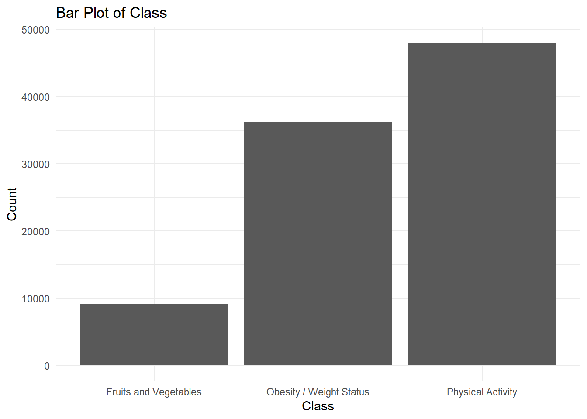
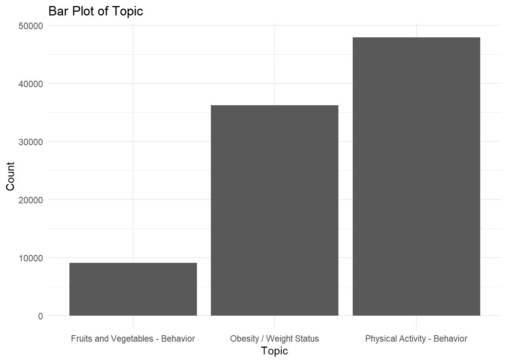
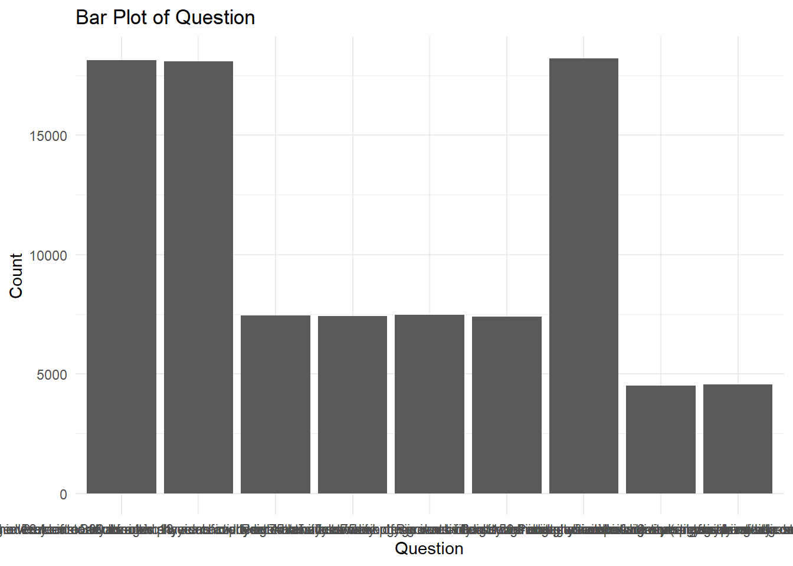
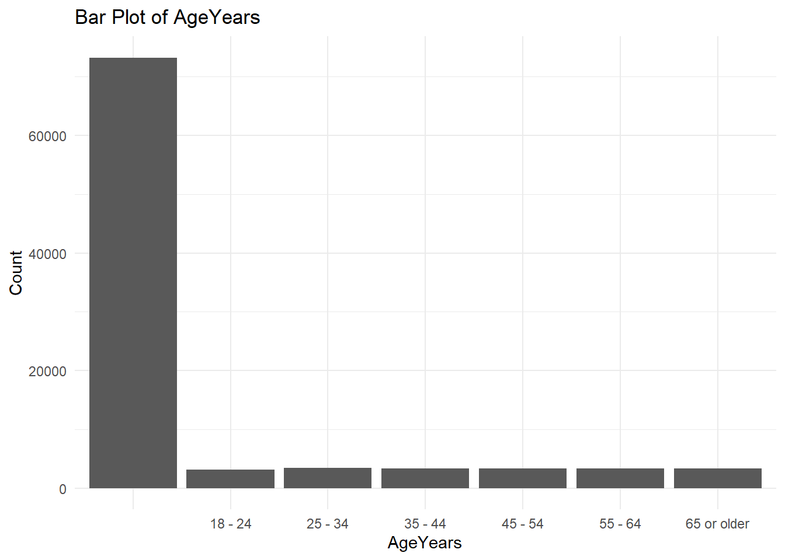
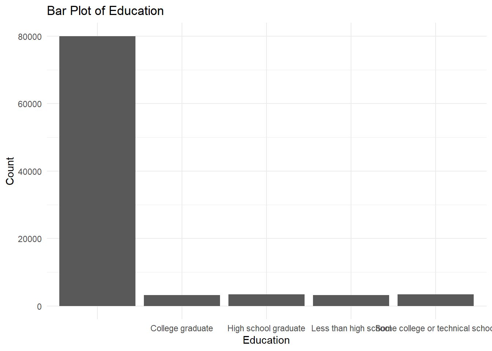
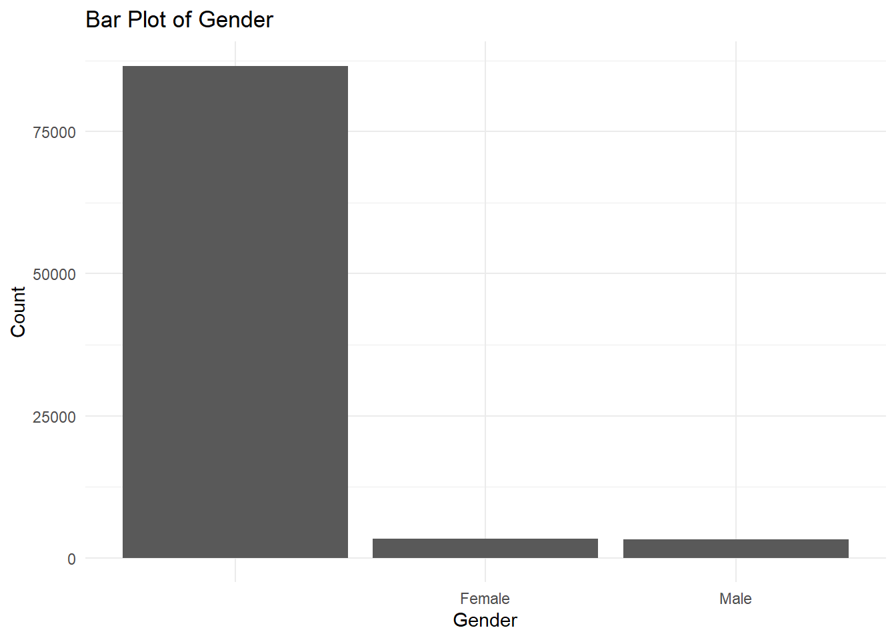
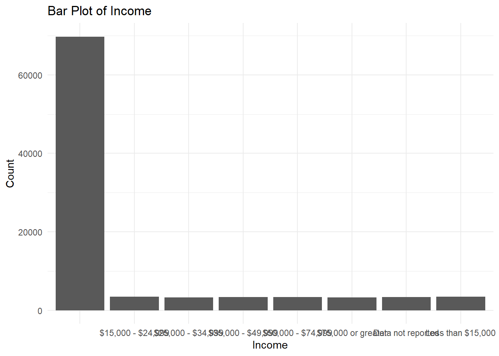
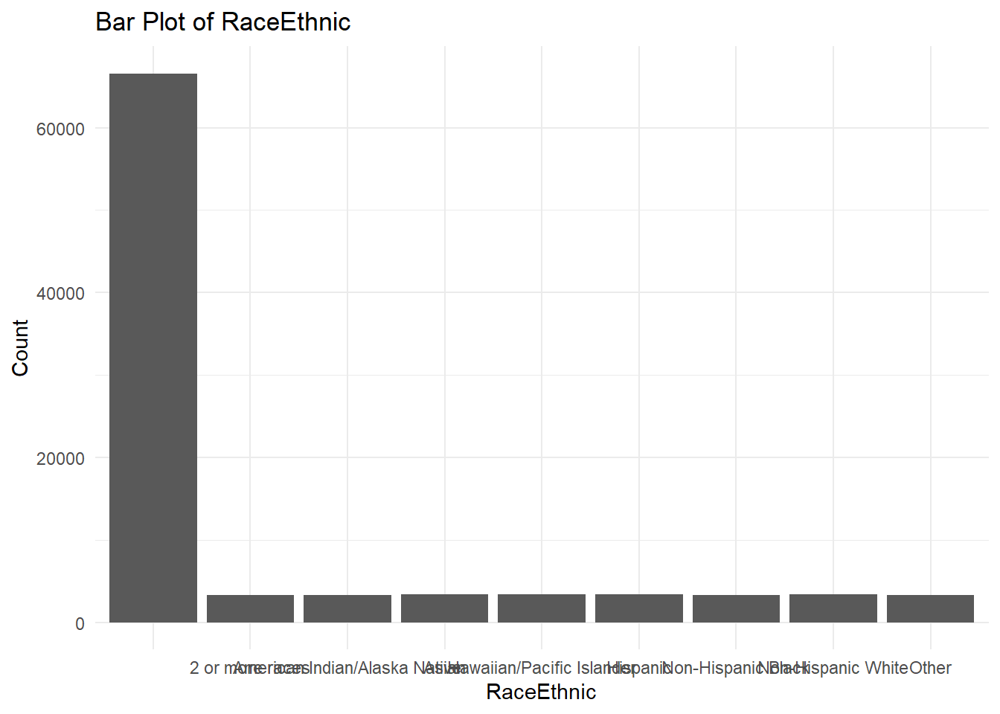
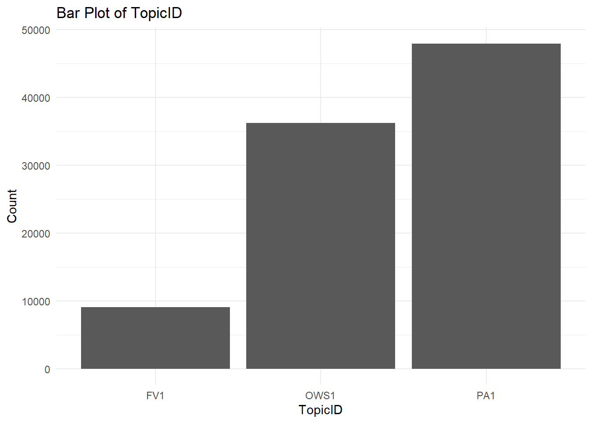
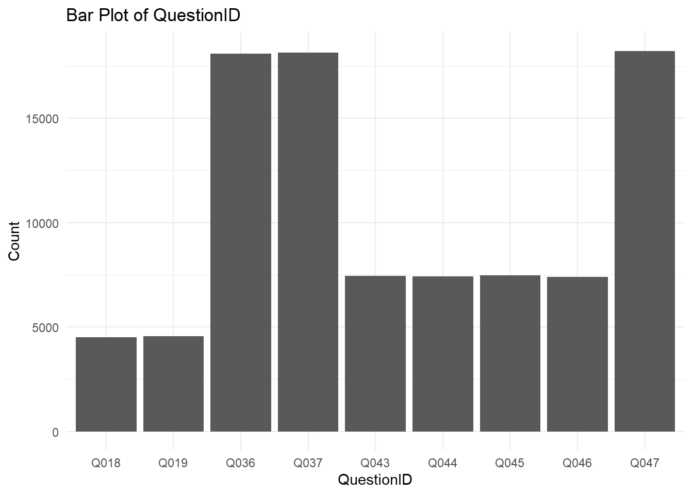
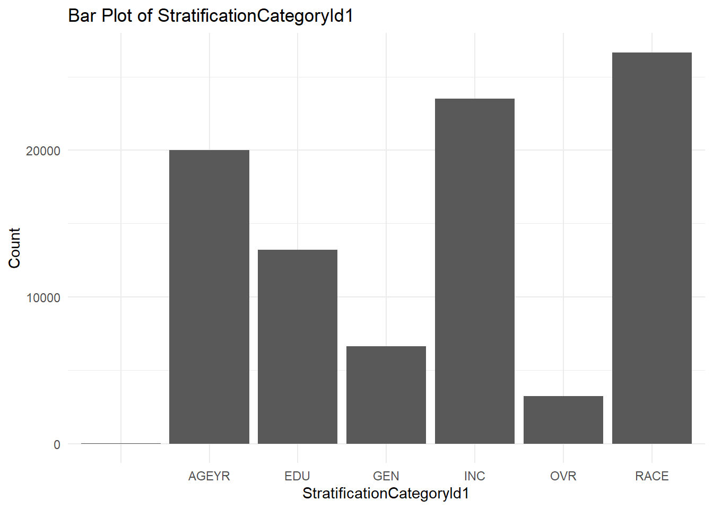
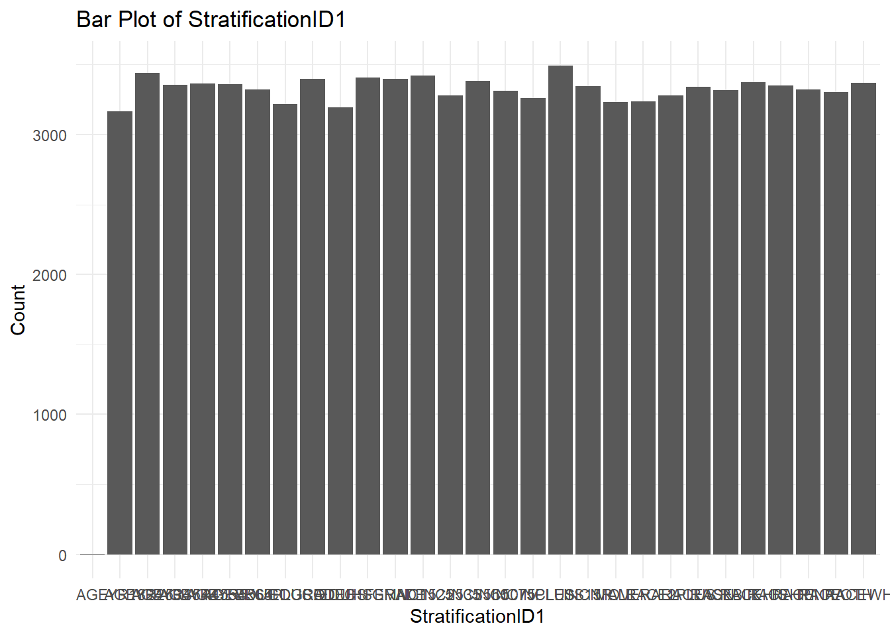
Here is a summary of the continuous variables from the synthetic dataset
summary(synthetic_ZC[continuous_vars]) YearStart Data_Value Low_Confidence_Limit High_Confidence_Limit
Min. :2011 Min. : 0.90 Min. : 0.30 Min. : 3.00
1st Qu.:2013 1st Qu.:24.80 1st Qu.:20.40 1st Qu.:29.10
Median :2017 Median :31.40 Median :27.10 Median :36.20
Mean :2016 Mean :31.46 Mean :27.11 Mean :36.38
3rd Qu.:2019 3rd Qu.:37.10 3rd Qu.:33.00 3rd Qu.:42.30
Max. :2022 Max. :73.80 Max. :70.20 Max. :87.70
NA's :9170 NA's :9170 NA's :9170
Sample_Size LocationID
Min. : 50 Min. : 1.00
1st Qu.: 511 1st Qu.:17.00
Median : 1108 Median :30.00
Mean : 3566 Mean :30.89
3rd Qu.: 2386 3rd Qu.:45.00
Max. :470531 Max. :78.00
NA's :9170 END of Assignment #5
# Assignment 5 - END
# Go Roadrunners!